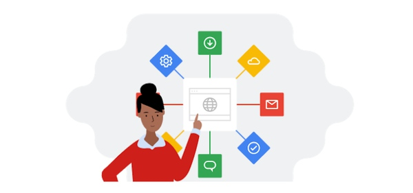

Formación Académica
- Instituto Politécnico Nacional (IPN) - ESCOM
Actualmente curso la carrera de Ingeniería en Sistemas Computacionales en la Escuela Superior de Cómputo. - CECyT 8 "Narciso Bassols"
Egresado como Técnico en Computación, donde adquirí mis bases lógicas y de programación.
Mis Hobbies
Fuera de la programación y el entorno académico, me dedico a diversas actividades que me ayudan a mantener un equilibrio y fomentar mi creatividad. Entre mis pasatiempos favoritos se encuentran:
- Videojuegos: Disfruto de explorar mundos interactivos, superando retos de lógica y estrategia.
- Coleccionar LEGOs: Me apasiona la paciencia y el detalle que requiere ensamblar piezas para formar estructuras complejas.
- Cursos de Google: Siempre estoy en la búsqueda de expandir mis conocimientos tecnológicos mediante certificaciones y cursos autodidactas.


Acerca de Criptografía: Alan Turing
Alan Mathison Turing (1912-1954) fue un matemático, lógico, informático teórico, criptógrafo y filósofo británico. Hoy en día es considerado universalmente como uno de los padres fundadores de la ciencia de la computación y precursor indiscutible de la informática moderna y la inteligencia artificial.
Durante la Segunda Guerra Mundial, Turing se unió al equipo de Bletchley Park, el centro de criptoanálisis británico. Allí desempeñó un papel crucial y decisivo al liderar la creación de la máquina Bombe, un ingenioso dispositivo electromecánico capaz de descifrar sistemáticamente los complejos mensajes encriptados generados por la máquina Enigma, la cual era utilizada por el ejército alemán para proteger sus comunicaciones militares. Sus formidables aportes en criptoanálisis permitieron anticipar movimientos tácticos, acortaron el conflicto bélico por varios años y lograron salvar millones de vidas, demostrando empíricamente el poder absoluto del análisis lógico para quebrar algoritmos criptográficos aparentemente inexpugnables.
Descargas y Llaves
En esta sección podrás encontrar mi Currículum Vitae actualizado con mi trayectoria, así como mi llave pública, generada para la implementación segura del algoritmo de cifrado asimétrico RSA.